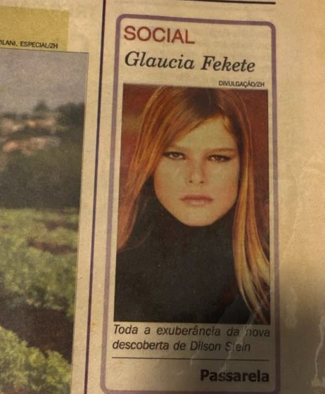

Key figures from this investigation
Números-chave desta investigação
Gláucia Fekete was 13 years old when she was first noticed. The scout who approached her was Dilson Stein — the same man who had launched the career of Gisele Bündchen, Brazil's most celebrated supermodel. Growing up in Santa Rosa, a small city 500 kilometres from Porto Alegre in Rio Grande do Sul, Gláucia had few reasons to suspect the world of high fashion would ever reach her doorstep.
Gláucia Fekete tinha 13 anos quando foi notada pela primeira vez. O olheiro que a abordou foi Dilson Stein — o mesmo homem que havia lançado a carreira de Gisele Bündchen, a supermodelo mais celebrada do Brasil. Crescendo em Santa Rosa, uma pequena cidade a 500 quilômetros de Porto Alegre no Rio Grande do Sul, Gláucia tinha poucos motivos para suspeitar que o mundo da alta moda algum dia chegaria à sua porta.
Three years later, in 2004, Stein came to her family with an extraordinary opportunity: a modelling contest in Ecuador with a prize of US$300,000 — and a direct pathway to New York contracts. The competition was called Models New Generation. But the man behind the contest was not just another talent scout.
Três anos depois, em 2004, Stein chegou à família com uma oportunidade extraordinária: um concurso de modelos no Equador com um prêmio de US$ 300 mil — e um caminho direto para contratos em Nova York. A competição se chamava Models New Generation. Mas o homem por trás do concurso não era apenas mais um caça-talentos.
A Visit to the Interior
Uma Visita ao Interior

Jean-Luc Brunel wanted to convince the family personally. The French modelling agent — who years later would be accused of being a procurer of young women for Jeffrey Epstein — travelled to Santa Rosa and spent an afternoon at the Fekete home. He was charming. He was professional. He presented the contest as a legitimate launch pad.
Jean-Luc Brunel quis convencer a família pessoalmente. O agente de modelos francês — que anos depois seria acusado de ser um aliciador de jovens para Jeffrey Epstein — viajou até Santa Rosa e passou uma tarde na casa dos Fekete. Era carismático. Era profissional. Apresentou o concurso como uma plataforma legítima de lançamento.
In 2004, Brunel was not yet under police investigation. His name would only later become synonymous with systematic abuse. Gláucia's mother, Bárbara, allowed her daughter to travel.
Em 2004, Brunel ainda não estava sob investigação policial. Seu nome só mais tarde se tornaria sinônimo de abuso sistemático. A mãe de Gláucia, Bárbara, permitiu que a filha viajasse.
"Without knowing it, I was right in the middle of that whole hurricane."
"Sem saber, eu estava bem no meio desse furacão todo."— Gláucia Fekete, now 38
Gláucia travelled to Guayaquil, Ecuador with Brunel's team. The contest, Models New Generation, was held there in August 2004. The Ecuadorian newspaper El Universo photographed the event, noting that contestants were aged between 15 and 19 years old.
Gláucia viajou para Guayaquil, Equador, com a equipe de Brunel. O concurso Models New Generation foi realizado lá em agosto de 2004. O jornal equatoriano El Universo fotografou o evento, registrando que as concorrentes tinham entre 15 e 19 anos.
The winner was Aline Weber — a 15-year-old Brazilian who would go on to build a significant international modelling career. For Gláucia, the contest passed without incident. But something felt wrong almost immediately.
A vencedora foi Aline Weber — uma brasileira de 15 anos que posteriormente construiria uma significativa carreira internacional de modelos. Para Gláucia, o concurso transcorreu sem incidentes. Mas algo pareceu errado quase imediatamente.
She had no phone. The family had agreed there would be constant calls and video messages during the trip — but communication was impossible. "I couldn't reach anyone," she recalled.
Ela não tinha telefone. A família havia combinado que haveria ligações constantes e mensagens em vídeo durante a viagem — mas a comunicação era impossível. "Eu não conseguia falar com ninguém", ela recordou.
Epstein Was There
Epstein Estava Lá

BBC News Brasil's investigation uncovered documents showing that Jeffrey Epstein was in Guayaquil on August 24 and 25, 2004 — the same days as the contest's final round. Flight records and customs documents placed him there at exactly that moment.
A investigação da BBC News Brasil descobriu documentos mostrando que Jeffrey Epstein estava em Guayaquil nos dias 24 e 25 de agosto de 2004 — os mesmos dias da final do concurso. Registros de voos e documentos alfandegários o colocaram lá naquele exato momento.
Furthermore, the investigation found that at least one model under the age of 16 who had participated in the event flew on Epstein's private plane at least twice later that same year.
Além disso, a investigação descobriu que pelo menos uma modelo menor de 16 anos que havia participado do evento voou no avião particular de Epstein pelo menos duas vezes no mesmo ano.
From the investigation
Da investigação
Documents confirmed that Jeffrey Epstein was in Guayaquil on August 24–25, 2004, during the Models New Generation final. At least one underage contestant flew aboard Epstein's jet later that year.
Documentos confirmam que Jeffrey Epstein estava em Guayaquil nos dias 24 e 25 de agosto de 2004, durante a final do Models New Generation. Pelo menos uma concorrente menor de idade voou a bordo do jato de Epstein mais tarde naquele ano.
At the end of the contest, Brunel approached Gláucia with a new offer: an all-expenses-paid trip to New York to participate in fashion shows. It sounded like the next step in a promising career. But to proceed, they needed permission from her mother.
Ao final do concurso, Brunel se aproximou de Gláucia com uma nova oferta: uma viagem com todas as despesas pagas para Nova York para participar de desfiles. Parecia o próximo passo numa carreira promissora. Mas para prosseguir, precisavam da permissão de sua mãe.
Bárbara said no. Her words to investigators were direct: "They were looking for children, minors. Unfortunately, they found my daughter."
Bárbara disse não. Suas palavras aos investigadores foram diretas: "Procuravam só crianças, menores. Infelizmente acharam a minha filha."
Bárbara severed all contact with Brunel's network and pulled Gláucia out of the world that had courted her. It was a decision whose full significance would only become clear years later, after Brunel was arrested in France in connection with Epstein's crimes and later found dead in his cell in 2022.
Bárbara cortou todo o contato com a rede de Brunel e retirou Gláucia do mundo que a havia cortejado. Foi uma decisão cujo pleno significado só se tornaria claro anos depois, quando Brunel foi preso na França em conexão com os crimes de Epstein e posteriormente encontrado morto em sua cela em 2022.
"They were looking for children, minors. Unfortunately, they found my daughter."
"Procuravam só crianças, menores. Infelizmente acharam a minha filha."— Bárbara, Gláucia's mother
TIMELINE OF EVENTS
LINHA DO TEMPO
The Pipeline That Remained Hidden
O Pipeline Que Permaneceu Oculto

Gláucia's story reveals a systematic pattern that BBC News Brasil has been documenting since January 2026. Brunel used modelling agencies and competitions as a funnel: events promising legitimate careers were used to identify, isolate and evaluate young women for Epstein.
A história de Gláucia revela um padrão sistemático que a BBC News Brasil vem documentando desde janeiro de 2026. Brunel usava agências de modelos e competições como funil: eventos prometendo carreiras legítimas eram usados para identificar, isolar e avaliar jovens mulheres para Epstein.
The Brazilian Federal Public Ministry has opened an investigation into whether a recruitment network for Epstein operated in Brazil. The prosecutor leading the case has said she wants to hear from women who had contact with Epstein's circle — as witnesses, not suspects.
O Ministério Público Federal brasileiro abriu uma investigação sobre se uma rede de recrutamento para Epstein operou no Brasil. A promotora que lidera o caso disse que quer ouvir mulheres que tiveram contato com o círculo de Epstein — como testemunhas, não suspeitas.
Now 38, Gláucia has finally been able to name what nearly happened to her. "My mother saved me," she says, simply. Without her refusal, the story might have ended differently — as it did for others whose names appear in documents the BBC is still working to understand.
Agora com 38 anos, Gláucia finalmente conseguiu nomear o que quase aconteceu com ela. "A minha mãe me salvou", ela diz, simplesmente. Sem a recusa dela, a história poderia ter terminado de forma diferente — como aconteceu com outras cujos nomes aparecem em documentos que a BBC ainda trabalha para entender.